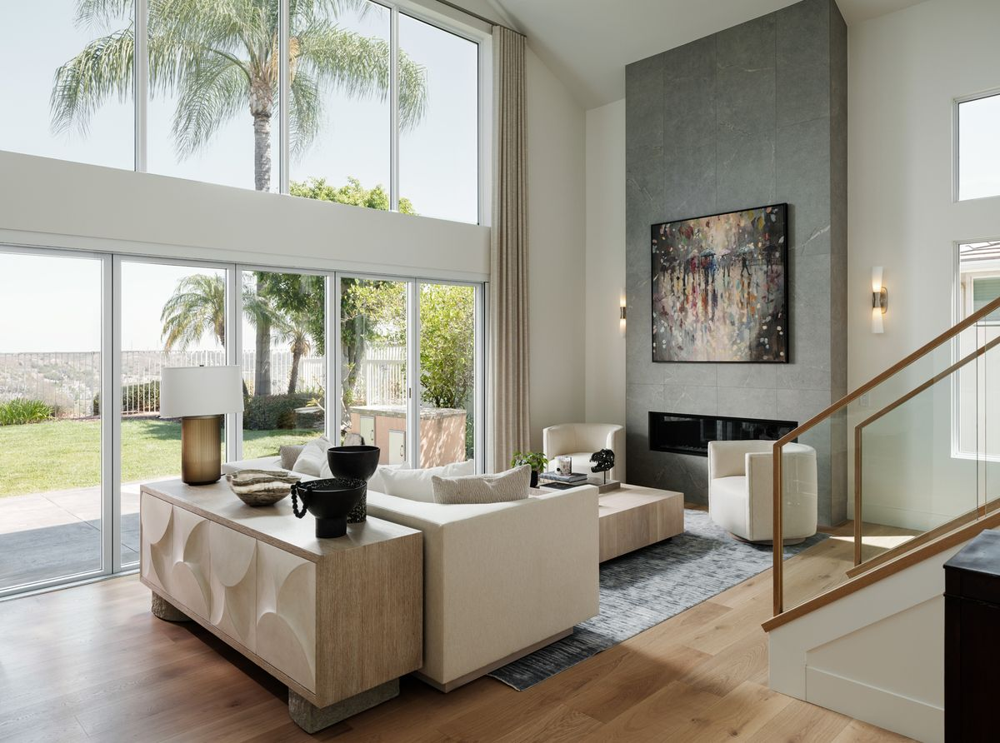
Canyon View Residence
Aliso Viejo, California
- Location
- Aliso Viejo, California
- Type
- Residential Remodel
- Services
- Architecture, Structural Engineering, Permitting
- Status
- Completed 2026
This Aliso Viejo house sat above a canyon but was closed off from it, divided into separate rooms that turned away from the view. We removed interior walls to join the existing spaces into one connected living level, so the kitchen, dining and living rooms now share the same light and outlook.
We reoriented the living room and the stair to face the canyon, then opened the house to it with large glass openings: stacked windows and sliding glass in the two-story living room, and a folding glass wall in the bedroom. Interiors and furnishings are by Samia Verbist Interior Design.
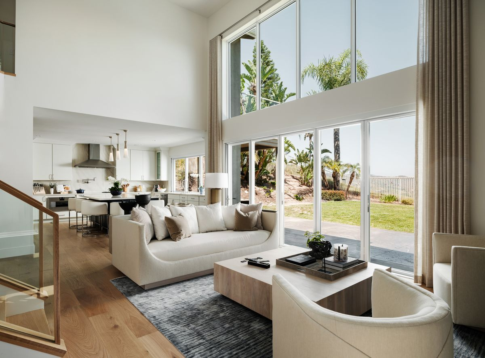
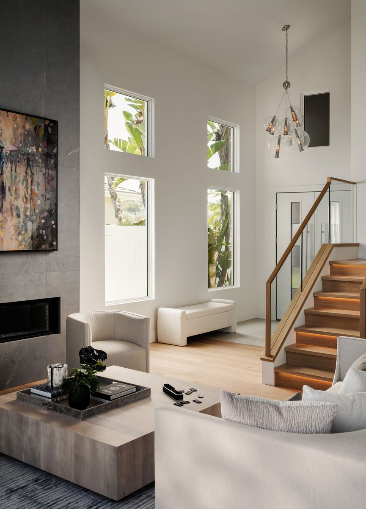
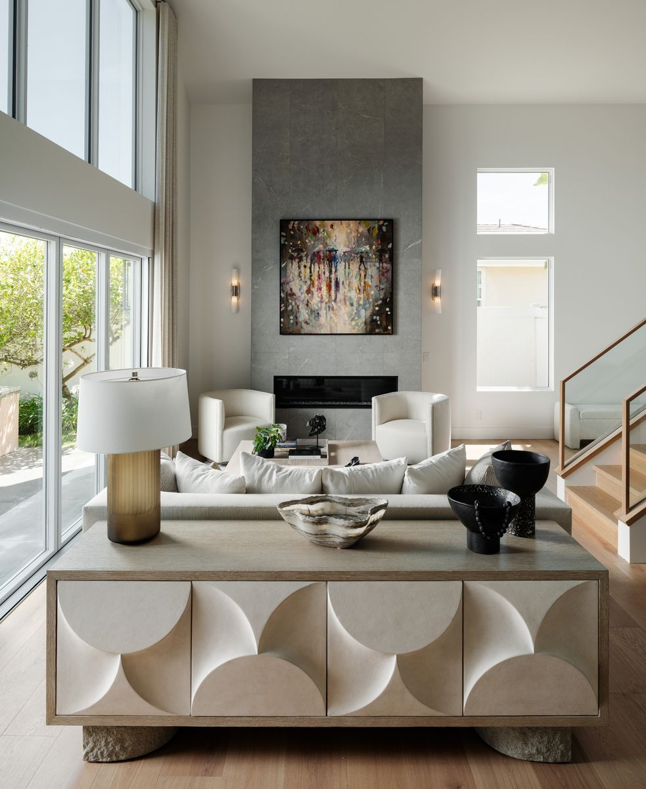
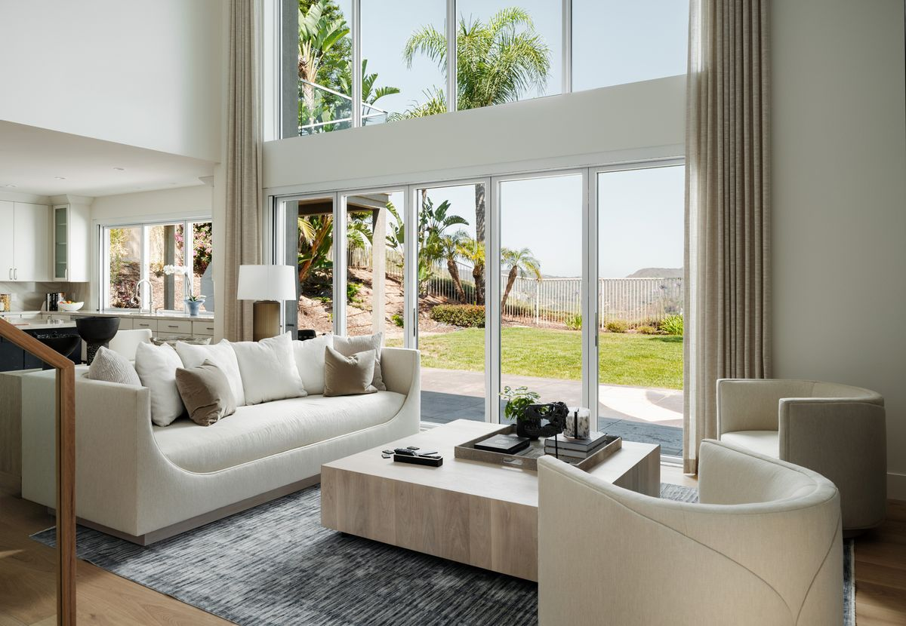
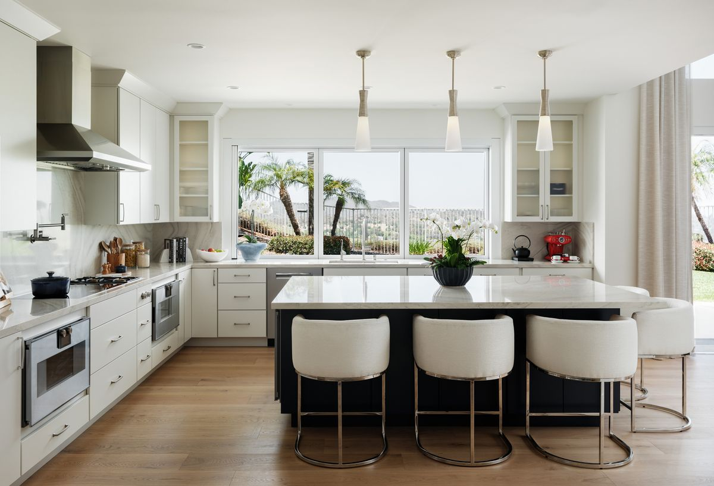
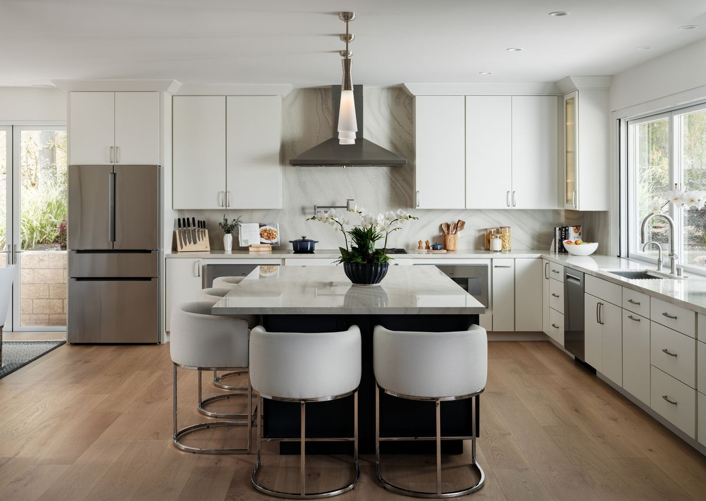
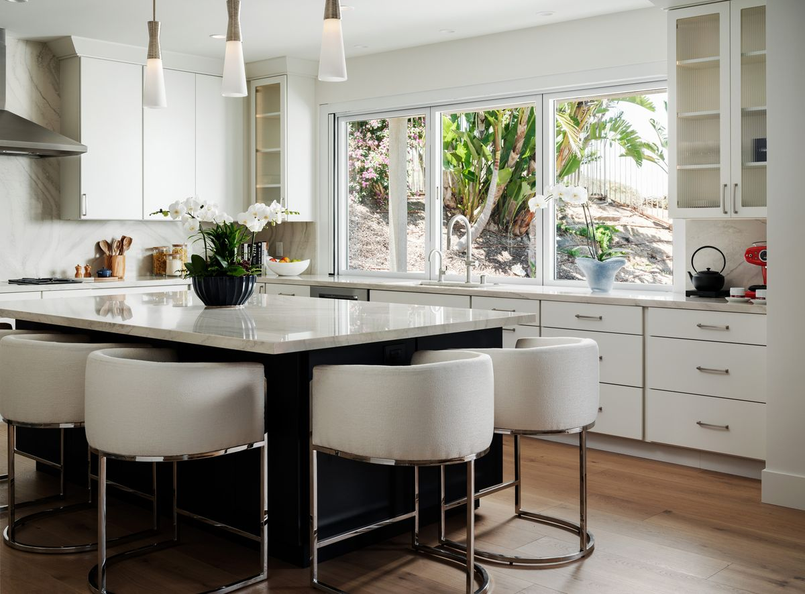
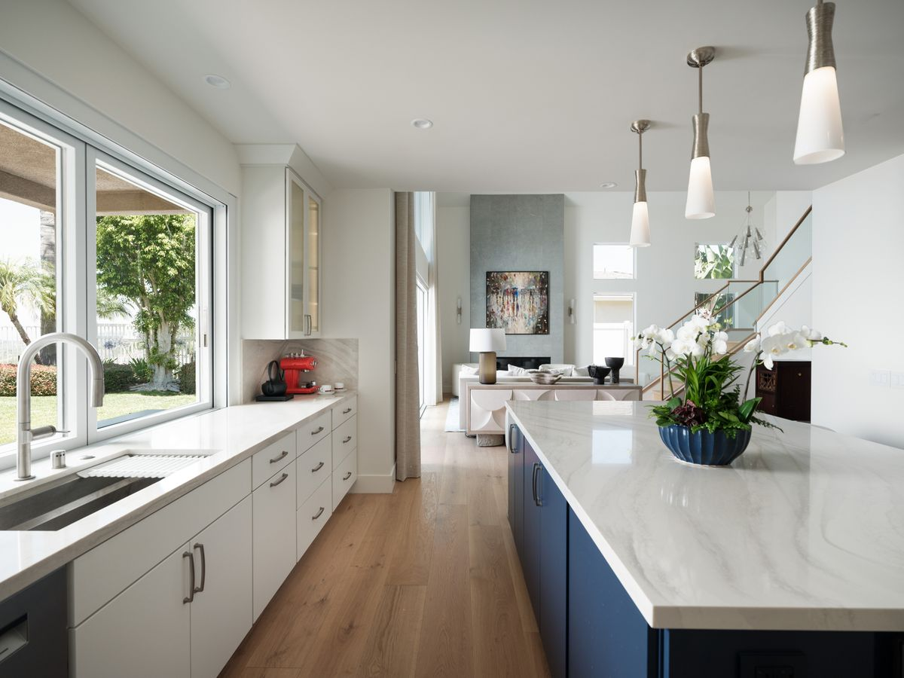
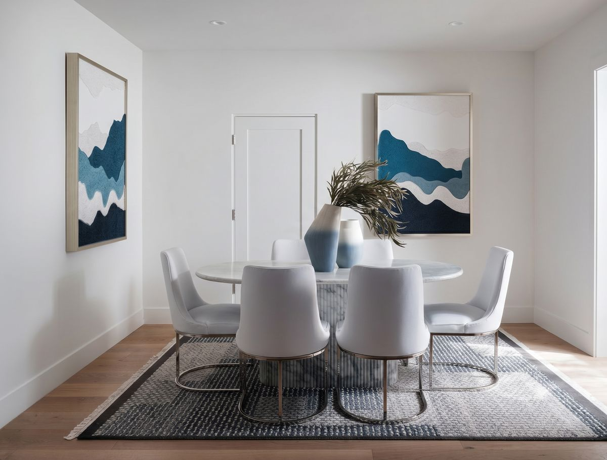
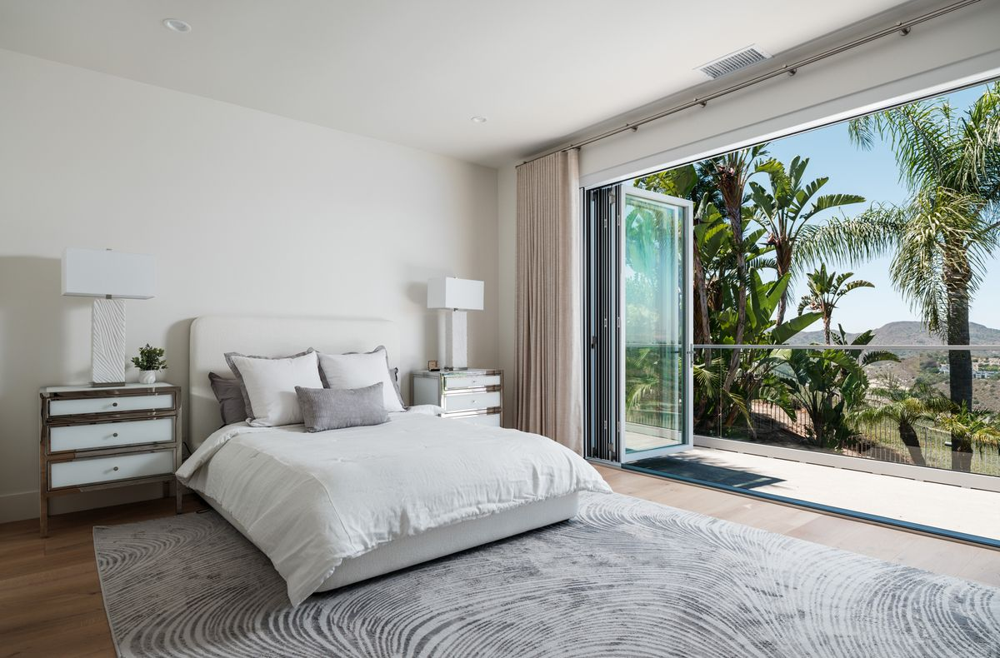
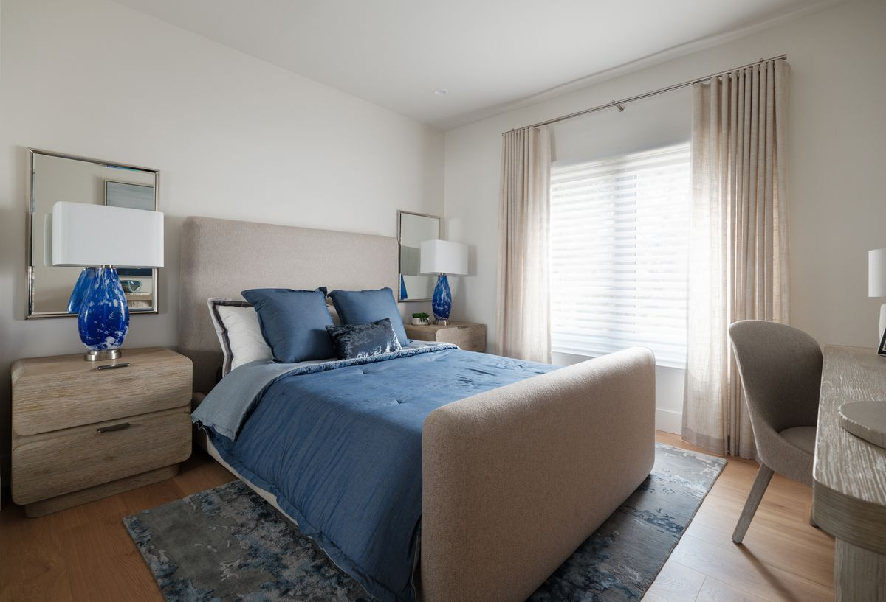
Architecture and engineering by Plansman Inc. Interior design by Samia Verbist Interior Design. Photographs courtesy of Samia Verbist Interior Design.
All projects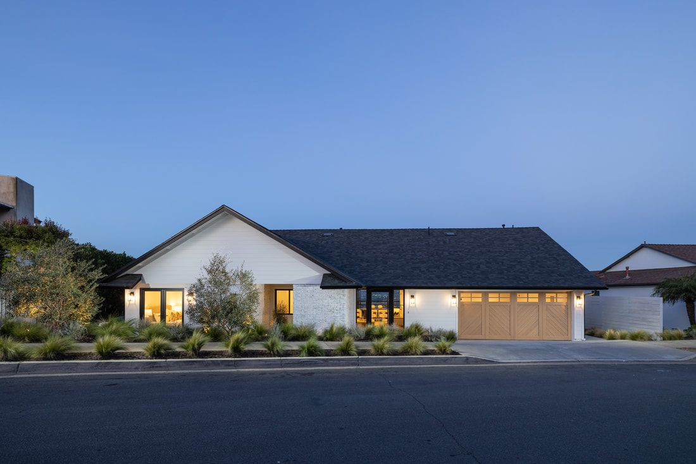
Next project
Alpine Way
Laguna Beach · Whole-House Remodel